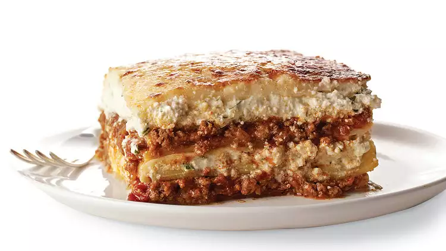

The History of Lasagna
The home of Lasagna is none other than Naples, Italy.
During the 14th century this Italian dish was made for special events and holidays,
but ironically enough this food was introduced
smack dab in the middle of the
Black Plague
Ingredients
- 1 pound sweet Italian sausage
- 3/4 pound lean ground beef
- 1/2 cup minced onion
- 2 cloves gralic, crushed
- 1 (28 ounce) can crushed tomatoes
- 2 (6 ounce) cans tomato paste
- 2 (6.5 ounce) cans canned tomato sauce
- 1/2 cup of water
- 2 tablespoons white sugar
- 1 1/2 teaspoons dried basil leaves
- 1/2 teaspoon fennel seeds
- 1 teaspoon Italian seasoning
- 1 1/2 teaspoons salt, divided, or to taste
- 1/4 teaspoon ground black pepper
- 4 tablespoons chopped fresh parsley
- 12 lasagna noodles
- 16 ounces ricotta cheese
- 1 egg
- 3/4 pound mozzeralla cheese, sliced
- 3/4 cup grated Parmesan cheese